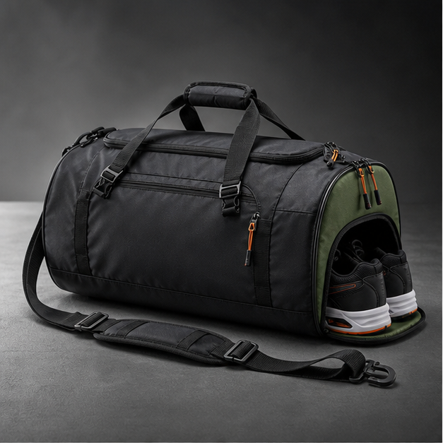
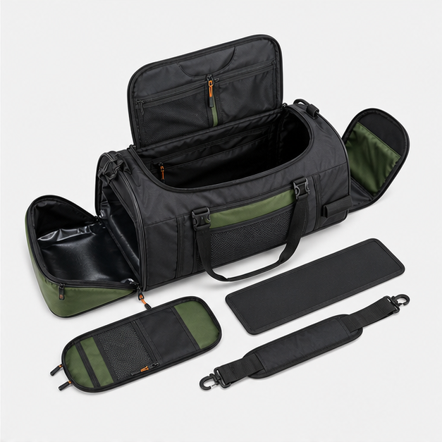
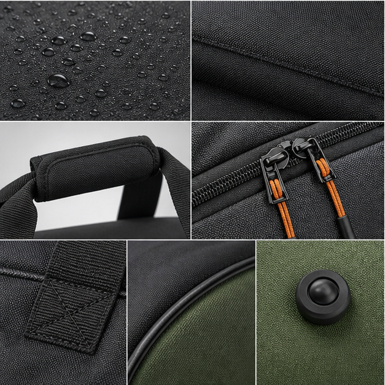
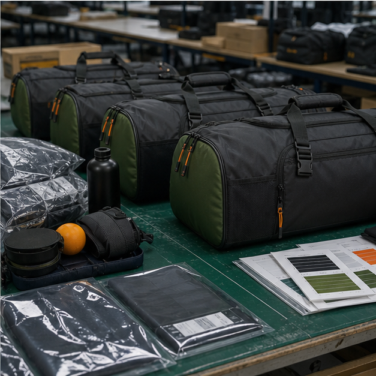

Why duffel bags still sell when designed well
Sports duffel bags remain one of the most practical product categories for gyms, teams, school programs, travel brands and promotional buyers. The shape is familiar, the capacity is easy to understand, and the product can carry strong branding. But a good custom duffel is not just a tube with handles. The opening, shoe tunnel, bottom reinforcement, strap comfort, wet pocket, internal organizer and packing method all affect customer satisfaction.
Cappuccino Bag develops custom sports duffel bags for buyers who need OEM/ODM support from sample development to export-ready packing. We help turn a desired retail position into specific material, structure and decoration choices so the product feels intentional rather than generic.
Choosing the right duffel structure
The most common sports duffel uses a U-shaped main opening because it gives easy access and photographs well. Barrel duffels can be efficient and sporty, while rectangular duffels offer better packing stability. Team bags often need large logo panels and durable shoulder straps. Gym bags may need shoe tunnels, wet pockets and water bottle storage. Travel duffels may need trolley sleeves, compression straps or more refined hardware.
Shoe compartments are valuable but must be sized carefully. If the shoe tunnel is too large, it steals capacity from the main compartment. If it is too small, customers complain that real shoes do not fit. We review target shoe sizes, ventilation, lining material and zipper opening during sample development.
Material decisions for sports and travel use
Common duffel materials include 600D polyester, 900D polyester, nylon, coated polyester, tarpaulin-style fabric, ripstop panels, PE board, webbing, mesh, rubber feet and molded zipper pullers. A promotional duffel may use lighter materials and simple printing. A gym retail bag may use coated fabric, reinforced bottom, custom webbing and cleaner pocket construction. A travel duffel may need more structured panels and better hardware.
The bottom panel deserves special attention because it takes abrasion from locker rooms, bus floors, court surfaces and luggage carts. Reinforced fabric, protective piping, rubber feet or an added board can improve the perceived value and durability. Handle wraps also matter; a strong bag feels cheap if the handles cut into the hand when loaded.
Branding and private-label packaging
Duffel bags provide strong logo space, but buyers should choose decoration based on material and use. Screen printing is cost-effective for team and event bags. Embroidery can work for small marks or patches. Heat transfer looks clean on flat panels but must be tested on coated materials. Rubber badges, woven patches and custom zipper pullers are useful for premium private-label programs.
Packaging can be simple or retail-ready. Some buyers need individual polybags and carton marks only. Others require hang tags, barcode labels, insert cards, folded packing, display-friendly packaging or private-label cartons. Planning packaging early prevents last-minute cost surprises and makes warehouse receiving easier for global buyers.
QC points that prevent returns
Sports duffel QC should check zipper operation around curves, shoe tunnel size, strap strength, handle bartacks, bottom abrasion reinforcement, wet pocket lining, logo placement, stitching consistency and packing recovery. For team and promotional orders, color consistency and logo accuracy are often the most important checks. For retail duffels, shape, pocket function and material handfeel matter more.
QC photos before shipment can document product front, back, side, interior, shoe compartment, logo detail, carton label and packing method. This gives international buyers evidence that the production matches the approved sample before goods leave the factory.
Case direction for buyers
A school sports program might need a durable medium duffel with large logo printing, reinforced handles and simple packing. A gym brand might need a more premium bag with a coated shell, wet pocket, shoe tunnel, custom zipper pullers and retail hang tags. A travel accessories brand might need a duffel that pairs with luggage and uses a trolley sleeve, structured panels and more refined trims.
Instead of offering the same duffel to every buyer, Cappuccino Bag helps define the product role first. That makes the sample more useful, the quotation more realistic and the final bag more aligned with the buyer's channel.
Buyer specification checklist for sports duffel programs
Sports duffel buyers should define the exact use case before selecting a shape. A gym duffel, team equipment bag, school sports bag, travel duffel and promotional event bag may look similar, but they need different construction. Buyers should specify capacity, opening type, shoe tunnel requirement, wet pocket requirement, shoulder strap style, handle wrap, bottom reinforcement, logo size, material handfeel and packing method.
If the duffel is for team or school use, logo visibility and durability may matter most. If it is for retail gym customers, pocket organization and material finish become more important. If it is for travel, structure, hardware and trolley compatibility may be valuable. A clear use case keeps the sample from becoming a generic bag with random features.
Cost drivers and construction choices
Duffel cost is driven by size, fabric weight, zipper length, number of compartments, bottom reinforcement, strap construction, hardware and logo method. A U-shaped opening is useful but requires a long zipper and careful sewing around curves. A shoe tunnel adds function but also adds lining, zipper, labor and possible capacity trade-offs. A reinforced bottom improves durability but changes folding and packing.
Cost control should focus on the customer promise. A team bag may not need a complex interior organizer, but it does need strong handles and clean logo printing. A premium gym duffel may not need the largest capacity, but it should have a better wet pocket, shoulder strap and fabric finish. Cappuccino Bag can help buyers choose construction details that support the intended retail story.
Sample review and packing checks
When reviewing a duffel sample, fill it with realistic items: shoes, towel, apparel, bottle and accessories. Check whether the zipper opens smoothly when the bag is full, whether the shoe pocket blocks the main compartment, whether the shoulder strap twists, and whether the handle wrap feels comfortable. Place the loaded bag on the floor and check if the bottom panel keeps shape.
Packing is especially important for duffels because they can arrive crushed if folded poorly. Some bags recover well, while structured duffels need more careful packing. Before production approval, buyers should confirm folded size, carton quantity, shape recovery and barcode or carton label requirements. This prevents avoidable problems when goods reach the warehouse.
Image proof and case evidence to add before final publishing
For a sports duffel page, real evidence should show the U-shaped opening, shoe tunnel, wet pocket lining, reinforced bottom, handle bartacks and loaded shape. Buyers also benefit from packing photos because duffels can look very different after folding and shipment. A useful case image set would include one finished product photo, one inside-structure photo, one trim close-up and one pre-shipment QC or carton-packing photo.
RFQ mistakes to avoid
For sports duffels, the most common RFQ problem is treating every duffel as the same basic cylinder. Buyers should define the opening style, shoe tunnel, wet pocket, strap level, bottom reinforcement, logo size and target use. A team order may need large logo printing and strong handles, while a gym retail bag may need cleaner materials and better pocket organization. Clear RFQ details make quotations more comparable and reduce sample revisions. It is also useful to state whether the bag will be sold empty, packed as a kit, or shipped folded for e-commerce because each route changes the carton and shape-recovery requirements. Better RFQ detail also reduces avoidable returns after launch.
Send us your target product brief
Share reference photos, expected order quantity, target price level, material preference, logo method and packaging needs. Cappuccino Bag can review the concept and suggest a practical sample route.
Request OEM/ODM Support